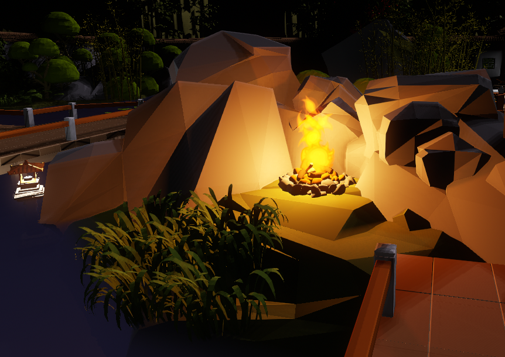
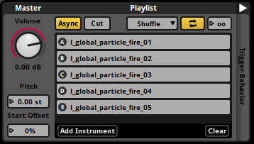
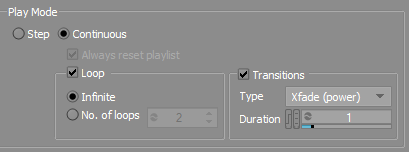
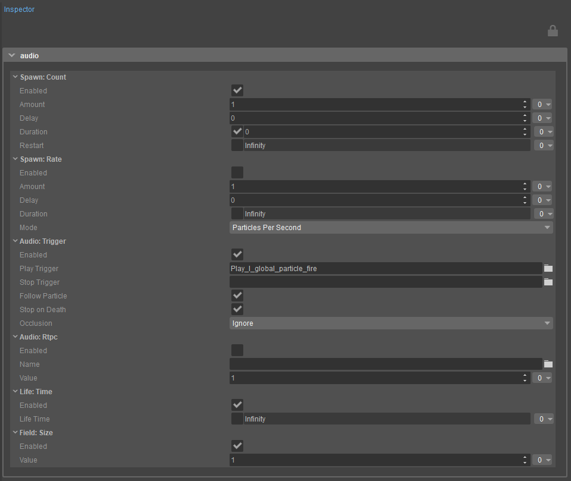
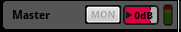
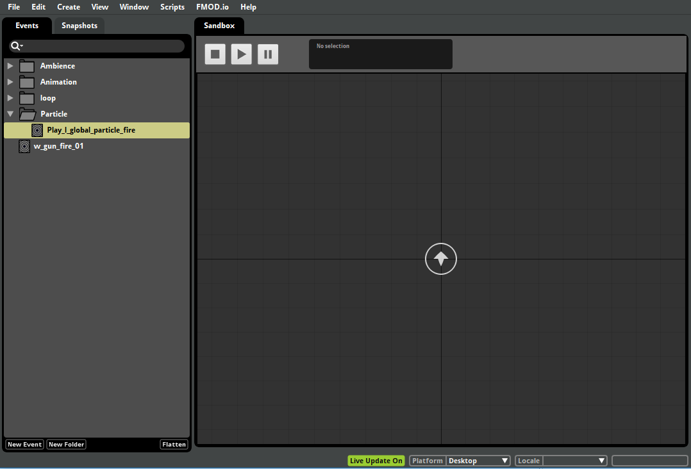
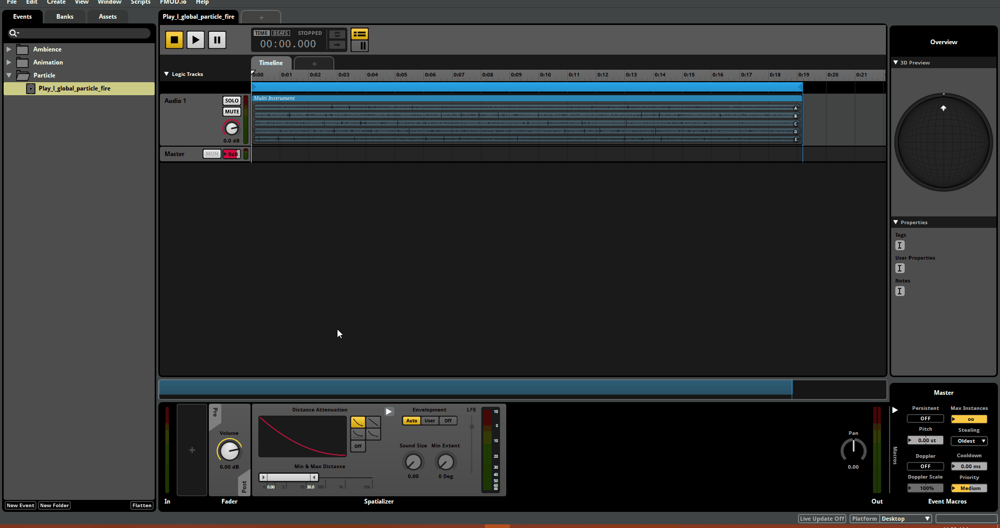
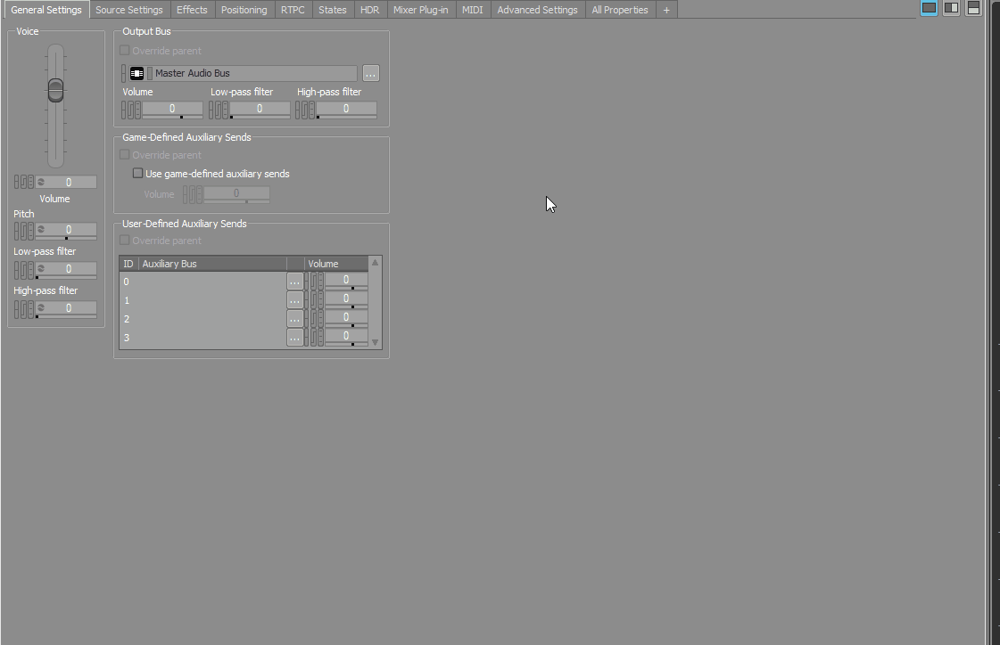
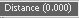

Обзор
К концу главы 01 нам удалось создать очень простую атмосферу для нашего Китайского сада, прежде чем перейти к добавлению звуковых эффектов/фоли к стрельбе и шагам персонажа от первого лица.
В этой главе мы посещаем костер, расположенный в центре карты, чтобы добавить зацикленный звук к частице огня, а также реалистичное затухание. Аудиофайлы, которые мы будем использовать, включены в chapter_03 папка выбранной вами реализации промежуточного программного обеспечения, расположенная в каталоге установки ресурсов Audio Showcase.
Идите и послушайте их! 
Камин
FMOD Видеоурок
Рабочий процесс FMOD этой главы также описан в следующем видео:
Добавление петли к частице огня
FMOD Студия
Аудиофайлы, которые мы будем использовать для создания зацикленного аудиоэффекта у костра, хранятся в папке _Audio_Assets/FMod Studio/chapter_03/ папка в каталоге установки ваших ресурсов Audio Showcase как l_global_particle_fire_01.wav, l_global_particle_fire_02.wav, l_global_particle_fire_03.wav, l_global_particle_fire_04.wav и l_global_particle_fire_05.wav.
Создайте новую папку в Audio Bin и Событие вкладка вашего проекта FMOD под названием Частица, и перетащите в них пять аудиофайлов, чтобы создать новое 3D-событие с несколькими инструментами. Назовите это l_global_particle_fire.
Выберите l_global_particle_fire Событие и нажмите кнопку Мультиинструмент временная шкала в центре экрана; йНа нижней панели вы должны увидеть следующий список воспроизведения аудиоресурсов, составляющих событие.

Плейлист
Нажмите кнопку
Если вы теперь играете в событие, вы заметите два локатора, перемещающихся по мультиинструментальному дисплею. Меньший локатор внутри каждой дорожки отображает время воспроизведения этого файла, а больший локатор используется для данных автоматизации. Тема автоматизации рассматривается в главе 04.
Затем нам нужно создать Loop Region, чтобы указать область мультиинструмента, которую необходимо зациклить. Поскольку нам хотелось бы, чтобы временная шкала всего мультиинструмента зацикливалась:
- Щелкните правой кнопкой мыши Мультиинструмент временную шкалу и выберите Новый регион Лупа опция из контекстного меню.
- Это создаст новый синий маркер над Мультиинструмент график. Воспроизведите событие и послушайте результат.
Наконец, добавьте это l_global_particle_fire Событие для нового банка под названием Частица, прежде чем пересобрать все SoundBanks, нажав кнопку F7 ключ. Вернитесь к ACE и создайте новую библиотеку под названием Частица в Органы управления аудиосистемой панель.
- Перетащите l_global_particle_fire Событие, которое мы только что создали, в Частица Библиотека для создания одноименного аудио-триггера.
- Также добавьте Частица Саундбанк из Данные промежуточного программного обеспечения панель к Предварительная загрузка библиотеку перед перезагрузкой аудиодвижка.
Wwise
Аудиофайлы, которые мы будем использовать для создания зацикленного аудиоэффекта для костра, хранятся в папке _Audio_Assets/Wwise/chapter_03/ папка в каталоге установки ваших ресурсов Audio Showcase как l_global_particle_fire_01.wav, l_global_particle_fire_02.wav, l_global_particle_fire_03.wav, l_global_particle_fire_04.wav и l_global_particle_fire_05.wav.
Начните с создания нового Actor-микшера под названием Частица в рабочем блоке по умолчанию Actor – иерархия микшера, новый Частица папка в папке События вкладка и новая Частица SoundBank в Wwise. Затем перетащите все ресурсы из _Audio_Assets/Wwise/chapter_03/ папку в новый случайный контейнер внутри Частица Actor-Микшер и назовите Контейнер. l_global_particle_fire.
Цель состоит в том, чтобы создать зацикленную частицу огня, которая воспроизводит случайные аудиофайлы в каждом цикле для максимального разнообразия. Для этого необходимо создать родительский случайный контейнер для нашего текущего l_global_particle_fire Контейнер:
- Щелкните правой кнопкой мыши l_global_particle_fire Случайный контейнер и выберите Новый родитель → Случайный контейнер вариант. Назовите родительский контейнер Random. l_global_particle_fire.
- Выберите родителя l_global_particle_fire Контейнер, а затем в Общие настройки вкладке Редактора свойств, установите Режим игры на Непрерывный. Выберите Петля вариант, активировать Переходыи установите переход Тип чтобы Xfade(сила) из раскрывающегося списка.
Кроссфейд Xfade (Power) на Wwise обеспечивает плавный переход между аудиофайлами Контейнера, сохраняя при этом постоянную громкость.

Переходы
Переход Продолжительность подходит 1 секунда; теперь, когда родитель l_global_particle_fire Контейнер зациклен, он запускает дочерний элемент l_global_particle_fire Контейнер, который затем случайным образом выбирает один из l_global_particle_fire_0X файлы. Таким образом, можно создать несколько различных аудиосистем, просто комбинируя разные типы контейнеров в Wwise.
- Затем создайте новое событие для родителя. l_global_particle_fire Контейнер, щелкнув его правой кнопкой мыши и выбрав Новое событие → Играть вариант.
- В События вкладку, создайте новую папку с именем Частица, и переместите Play_l_global_particle_fire Событие, которое вы только что создали в нем.
- Наконец, добавьте Частица папку событий в Частица SoundBank. Сохраните проект и создайте все звуковые банки.
Вернитесь к ACE и создайте новую библиотеку под названием Частица на панели управления аудиосистемой.
- Перетащите Play_l_global_particle_fire Событие, которое мы только что создали, в Частица Библиотека для создания одноименного аудио-триггера.
- Также добавьте Частица Soundbank из панели данных промежуточного программного обеспечения в g_preloads библиотеку перед перезагрузкой аудиодвижка.
SDL Микшер
Звук для костра был включен как Play_l_global_particle_fire.ogg, под _Audio_Assets/SDL_Mixer/chapter_03/ папка в каталоге установки ресурсов уровня Audio Showcase.
- Создайте новую библиотеку под названием Частица под /Активы/Аудио/sdlmixer/активы каталог вашего проекта и скопируйте в него файл.
- Установите значение Макс. расстояние собственность 10 на панели «Свойства».
- Также активируйте Бесконечный цикл собственность.
Когда Включить затухание активирован, Макс. расстояние Значение поля определяет расстояние, на котором звук триггера будет полностью не слышен. Бесконечный цикл собственность тем временем, cзаставляет аудио триггер зацикливаться на неопределенный срок.
Сохраните созданную библиотеку и перезагрузите звуковой движок, прежде чем приступить к связыванию триггера с частицей огня.
Добавление триггера к частице огня
Частицы относятся к элементам, которые используются для создания визуальных эффектов, или к небольшим физическим объектам, которые могут двигаться, излучать свет, реагировать на столкновения и так далее. Particle Editor обеспечивает визуализацию компонентов частицы на основе узлов и будет использоваться для добавления звука к частице огня костра. Откройте его, используя Инструменты → Particle Editor в главном меню Sandbox.
Частица огня находится в /Активы/Частицы/Fire.pfx папка каталога ресурсов нашего проекта; откройте его, нажав кнопку

Настройка частиц
Теперь вы сможете увидеть различные компоненты, составляющие частицу огня. Чтобы добавить Play_l_global_particle_fire аудиотриггер, созданный на предыдущем шаге, к частице:
- Щелкните правой кнопкой мыши пустое место внутри Эффект окно.
- Найдите по умолчанию → аудио компонент в появившемся поле поиска и выберите его.
Теперь цель состоит в том, чтобы звуковой триггер останавливался при уничтожении частицы огня. Он также не должен срабатывать повторно, поскольку Play_l_global_particle_fire Событие, из которого извлекается звуковой триггер, уже спроектировано для зацикливания в нашей настройке промежуточного программного обеспечения.
- В аудио компонент, выберите фиолетовый Аудио: Триггер функция. При этом на панели «Инспектор» окна Particle Editor отображается список свойств объекта.
- Добавьте Play_l_global_particle_fire спровоцировать Играть в триггер поле, щелкнув значок и выбрав триггер из появившегося списка.
- Обновите аудио компонента, щелкнув левой кнопкой мыши по пустому пространству внутри Эффект окне, а затем снова в Аудио: Триггер функция. Активируйте Следовать за частицей и Остановись на смерти свойства компонента на панели «Инспектор».
Как следует из названия, Остановись на смерти Свойство заставляет звуковой триггер прекращать воспроизведение, когда частица отключена. Следовать за частицей В то же время свойство заставляет звук звукового триггера следовать за частицей при ее перемещении по сцене; поэтому рекомендуется использовать эту настройку, когда звуковой триггер предназначен для зацикливания.
Наконец, нажмите коричневый Жизнь: Время функцию и деактивировать Время жизни свойство из окна инспектора. Это устанавливает значение времени жизни частицы равным бесконечности. Не забудьте сохранить весь прогресс, выбрав значок Сохранить вариант из
Затухание
FMOD
Если вы используете реализацию промежуточного программного обеспечения FMOD, вы заметите, что звук триггера костра уменьшается по мере того, как игрок отходит дальше. Это связано с тем, что FMOD Studio устанавливает затухание по умолчанию для каждого 3D-события.
Чтобы просмотреть Play_l_global_particle_fire Настройки затухания событий в вашем проекте FMOD:
- Выберите Play_l_global_particle_fire Событие из События вкладка вашего проекта FMOD.
- Нажмите на мастер-трек события.

В рамках Эффект пространственизатора панель — красная кривая, описывающая, как громкость События меняется с расстоянием; конкретный Мин и Макс значения можно установить снизу кривой.
По умолчанию расстояние в 1 единицу в FMOD соответствует 1 метру в CRYENGINE. Этот коэффициент расстояния можно изменить с помощью
Любые изменения, внесенные в Мин и Макс значения Play_l_global_particle_fire's затухание можно проверить в Sandbox FMOD следующим образом.
- Выбрать Окно → Sandbox из главного меню FMOD Studio. Откроется окно с маленькой стрелкой в центре сетки, как показано на изображении ниже, обозначающей положение и ориентацию слушателя.
- Перетащите Play_l_global_particle_fire Событие с панели слева на сетку. Это создаст новый круг на сетке, который представляет положение звука события относительно слушателя; щелкните кружок события и переместите его с помощью LMB, чтобы изменить его расстояние от слушателя.
- Учитывая положение события и его расстояние от установленного прослушивателя, эффект различных кривых затухания и минимальных/максимальных значений можно услышать, нажав double на кружок события, чтобы вызвать его.

FMOD Sandbox
В реальном мире с увеличением расстояния происходит не только уменьшение громкости, но и потеря высоких частот. Чтобы реализовать эту частотную модуляцию в игровой среде, нам нужно создать параметр, который меняется с расстоянием.
Откройте браузер предустановок, используя Окно → Браузер настроек в окне проекта FMOD Studio.
- Щелкните правой кнопкой мыши на светло-серой панели Браузера предустановок и выберите Новый параметр вариант из меню.
- Поскольку нам нужно использовать встроенный параметр, выберите Встроенный: Расстояние в открывшемся окне «Добавить параметр»; это Диапазон может быть установлено от 0 до 100, что означает, что когда событие находится на расстоянии 105 метров от слушателя, значение Расстояние параметр будет равен 100, его максимальному значению.
- Нажмите OK в окне «Добавить параметр», чтобы создать параметр и закрыть браузер предустановок.
Теперь нам нужен этот параметр Distance для управления частотой среза фильтра нижних частот.
Сначала вернитесь к Play_l_global_particle_fire Событие на вкладке «Редактор событий» вашего проекта FMOD выберите его мастер-трек и добавьте к нему новый эффект, щелкнув рядом с его ПространствоЭффект панель в баре внизу. Выберите Добавить эффект → Многополосный-EQ вариант из меню.
Многополосный EQ используется для подавления высоких частот на расстоянии с помощью фильтра нижних частот.
- Щелкните правой кнопкой мыши желтый элемент Freq. (A) на панели Multiband EQ и выберите Добавить автоматизацию; это добавляет новый трек под названием Многодиапазонный EQ под основной дорожкой.
- Теперь над дорожкой Аудио 1 события находится вкладка под названием Хронология. Нажмите кнопку + значок рядом с ним и выберите значок Расстояние параметр в появившемся окне «Выбор параметра», как показано на рисунке.

Выберите параметр
Теперь вы должны увидеть, как масштаб над дорожкой Audio 1 изменится на диапазон 0 - 100, что соответствует диапазону созданного нами параметра расстояния. Добавляя разные точки к кривой многополосной дорожки EQ, вы теперь можете изменять частоту среза фильтра нижних частот при разных значениях параметра расстояния, как показано в GIF выше.
Добавьте точки к Multiband EQ, щелкнув левой кнопкой мыши по его красной кривой; точки можно удалить, выделив их и нажав кнопку Удалить ключ. Значение параметра расстояния можно установить либо путем регулировки Расстояние диск над шкалой или переместив ползунок в Расстояние вкладка,
Проверьте различные значения частоты среза в сочетании с различными настройками затухания с помощью FMOD Studio Sandbox и, если все будет удовлетворительно, пересоберите все звуковые банки, перезагрузите звуковой движок в ACE и перейдите в игровой режим, чтобы услышать изменения.
Если вы хотите настроить значения параметров затухания/расстояния во время игры, установите s_FmodEnableLiveUpdate CVar равно 1 в вашем проекте user.cfg файл и перезапустите CRYENGINE. Как только уровень снова загрузится, включите обновления в режиме реального времени, нажав значок
Также в CRYENGINE настройка s_DrawDebug CVar для акг активирует отладку звука, при этом активные звуковые триггеры отмечаются сферами, а их имена и расстояние до слушателя отображаются. s_DrawDebug CVar способен отображать на экране множество отладочной информации; тип s_DrawDebug ? в Engine Console, чтобы просмотреть все возможные варианты отображения.
Wwise
Вы заметите, что звук костра остается постоянным независимо от положения игрока, поскольку он не пространственно оформлен в 3D. Чтобы изменить это:
- Выберите Частица Actor-Микшер на Wwise и откройте Позиционирование вкладка в редакторе свойств.
- Отметьте Переопределить родительский элемент коробку и установите 3D-пространство поле для Позиция + Ориентация; это позиционирует звук в трехмерном пространстве относительно ориентации слушателя.
Теперь нам нужно добавить к звуку затухание, которое определяет, как звук меняется с расстоянием; Wwise дает нам возможность не только изменять громкость звука, но также устанавливать фильтры низких/высоких частот и изменять распространение звука.
Такие аспекты, как частота и распространение звука, хранятся в наборе долей затухания, который также может использоваться несколькими другими звуками.
- Нажмите на значок внутри Затухание раздел в Свойства вкладка Редактора свойств.
- Выберите Новый в меню, чтобы создать новый набор общих ресурсов, и назовите его Attenuation_30m. Поскольку этот набор общих ресурсов теперь назначен Частица Actor – Микшер, нажав кнопку Редактировать Кнопка открывает редактор затухания, как показано.

Затухание
Красная линия, которую вы видите на графике настроек затухания, представляет громкость звука, которая активна по умолчанию. Попробуйте установить Макс расстояние чтобы 30.
Под Кривые раздел — список других параметров, которые можно активировать; поскольку мы хотели бы добавить фильтр нижних частот для ослабления, измените значение Фильтр нижних частот чтобы Пользовательский в Кривые раздел; теперь вы должны увидеть синюю линию в сетке настроек затухания.
- Дважды щелкните кривую, чтобы добавить на нее новую точку.
- Щелкните правой кнопкой мыши, чтобы применить определенное сглаживание. Следует отметить, что кривые обычно хуже влияют на производительность, чем линейные линии, из-за увеличения количества вычислений, которые необходимо выполнить.
Не стесняйтесь использовать GIF выше для справки.
Несколько кривых можно визуализировать в сетке настроек затухания, щелкнув значок рядом с цветовым кодом кривой в Кривые раздел. Однако обратите внимание, что при одновременном просмотре нескольких кривых на сетке можно редактировать только выбранную кривую.
Настройки затухания можно просмотреть, нажав кнопку пробел в редакторе затухания и переместив 
Проверьте различные настройки затухания и, если все будет удовлетворительно, сгенерируйте все SoundBanks, перезагрузите звуковой движок в ACE и перейдите в игровой режим, чтобы услышать изменения.
Если вы хотите настроить параметры затухания во время игры, установите s_WwiseEnableCommSystem CVar равно 1 в вашем проекте user.cfg файл и перезапустите CRYENGINE. Как только уровень снова загрузится, нажмите на значок Подключиться к удаленной платформе
Wwise должен автоматически идентифицировать CRYENGINE и ваше устройство как возможное соединение; для получения дополнительной информации нажмите кнопку Ф1 в окне «Удаленные подключения», чтобы перейти к документации Audiokinetic.
Также в CRYENGINE настройка s_DrawDebug CVar для акг активирует отладку звука, при этом активные звуковые триггеры отмечаются сферами, а их имена и расстояние до слушателя отображаются. s_DrawDebug CVar способен отображать на экране множество отладочной информации; тип s_DrawDebug ? в Engine Console, чтобы просмотреть все возможные варианты отображения.
Заключение
Наш уровень теперь содержит естественный звук костра, помимо окружающих звуков движения деревьев, которые мы добавили в главе 01. В следующей и последней главе мы будем работать над созданием динамической атмосферы для уровня, используя комбинацию наслоений звука, вложенных звуков и одиночных кадров.